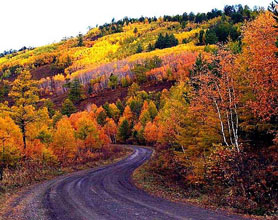
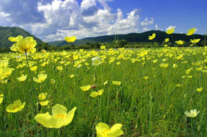
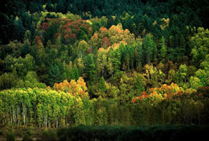

路线总汇
- 漠河-北红村-北极村 四日三晚深度自由行
- 春季线路 点击图片查看
- 路线：漠河县城→九曲十八湾→北极泉→白桦
林→额木尔河→龙江第一湾→乌苏里浅滩→边
境线→北红村→驯鹿部落→北极村......
- 大环线 漠河最北景点 五日深度游
- 春季线路 点击图片查看
- 漠河县城→九曲十八湾→北极泉→白桦林→阿
木尔河→龙江第一湾→乌苏里浅滩→边境线→
北红村→驯鹿部落→北极村→圣诞......
- 漠河-北极村 三日自由行
- 春季线路 点击图片查看
-
冬季的漠河小城 五六火灾纪念馆 松苑公园
九曲十八湾 起始点九区十八弯→观音山→胭
脂沟→最北邮局→中国最北点→......
- 神州北极村精品两日游
- 春季线路 点击图片查看
-
北极村是中国黑龙江省漠河县最北的村镇，同
时也是中国最北的城镇。北极村位于北纬
53°33′30″，东经122°......
- 漠河-北极村-洛古河村两日生态游
- 草原线路 点击图片查看
- 夏季开通
- 漠河洛古河村-呼伦贝尔大草原
- 草原线路 点击图片查看
- 夏季开通
- 漠河—呼伦贝尔大草原七日
- 草原线路 点击图片查看
- 夏季开通
- 漠河——海拉尔 环线
- 草原线路 点击图片查看
- 夏季开通
车型展示
-
 北京 悦动
北京 悦动
-
 丰田花冠
丰田花冠 -
 福特商务
福特商务 -
 现代 伊兰特
现代 伊兰特
- 漠河
- 漠河交通
- 漠河火车时刻表
- K7039 哈尔滨 始发 18:38分—次日 11:35分 漠河 终到
- K7041 哈尔滨东 始发 18:25分—次日 15:00分 漠河 终到
- 2667 沈阳 始发 15:10分—次日 21:10分 漠河 终到
- K7040 漠河 始发 12:47分—次日 06:00分 哈尔滨 终到
- K7042 漠河 始发 16:05分—次日 12:12分 哈尔滨东 终到
- 2668 漠河 始发 23:35分—第三日 06:04分 沈阳 终到
- 漠河航班时刻表
- CZ6279 北京 — 哈尔滨 — 漠河 北京起飞 10:25 抵达漠河 15:00（南方航空）
- BK2781 哈尔滨—加格达奇—漠河 哈尔滨起飞 08:40 抵达漠河 11:45（奥凯航空）
- BK2751 哈尔滨 — 黑河 — 漠河 哈尔滨起飞 11:30 抵达漠河 14:50（奥凯航空）
- CZ6280 漠河 — 哈尔滨 — 北京 漠河起飞 15:40 抵达北京 20:05 （南方航空）
- BK2782 漠河—加格达奇—哈尔滨 漠河起飞 12:10 抵达哈尔滨 15:20（奥凯航空）
- BK2752 漠河 — 黑河 — 哈尔滨 漠河起飞 15:25 抵达哈尔滨 18:50（奥凯航空）
漠河风光



漠河特产


- 漠河野生蓝莓
- 漠河野生红豆
- 漠河野生托莫
- 漠河野生羊奶子
- 漠河野生毛尖磨
- 漠河野生木耳
旅游景点
 漠河县神州北极石
漠河县神州北极石- 漠河县“中华北陲”石
- 漠河县北极沙洲
- 漠河县飞来松
- 漠河县洛古河村
- 漠河县北陲哨兵
- 漠河县九曲十八湾
- 漠河县妓女坟
- 漠河县北极星公园
- 漠河县金鸡之冠
- 漠河县李金镛祠堂
- 漠河县船坞岛
- 漠河县仙人洞
- 漠河县松苑原始森林公园
- 五大连池市五大连池风景......
- 五大连池市药泉山
- 五大连池市山口湖风景区
- 逊克县大平台雾凇风景区......
- 逊克县沾河漂流景区
- 嫩江县墨尔根水师营遗址
- 嫩江县嫩江高峰森林公园
- 嫩江县科洛火山群
- 黑河俄罗斯风情园
- 穆棱市六峰湖
- 宁安市镜泊湖
- 宁安市火山口国家森林公......
- 宁安市渤海国上京龙泉府......
- 宁安市兴隆寺
- 海林市双峰林场
- 海林市莲花湖
- 海林市威虎山城
- 牡丹江牡丹峰滑雪场
- 富锦市松花江碑林
- 牡丹江雪堡
- 富锦市富锦国家湿地公
- 富锦市工农新村
- 富锦市洪河自然保护区
- 富锦市风车山庄
- 富锦市五顶山森林公园
- 宝清县七星河湿地国家
- 宝清县珍宝岛革命烈士
- 宝清县宝石河公园
- 宝清县完达山国家森林
- 宝清县蛤蟆通水库风景
- 宝清县完达山国家森林
- 宝清县雁窝岛自然保护
- 宝清县天府公园
- 讷河市清河屯遗址
- 讷河市威远将军碑
- 讷河市雨亭公园
- 拜泉县拜泉生态公园
- 拜泉县宝塔公园
- 拜泉县北山
- 拜泉县太阳庙
- 拜泉县通肯河
- 齐齐哈尔卜奎清真寺
- 齐齐哈尔博物馆
- 齐齐哈尔和平广场
- 齐齐哈尔龙沙公园
- 齐齐哈尔嫩江公园
- 五常市凤凰山国家森林公......
- 五常市石刀山景区
- 五常市龙凤山风景区
- 尚志市亚布力国家森林
- 尚志市尚志碑林
- 尚志市亚布力雅旺斯滑
- 尚志市苇河国家森林公
- 尚志市赵一曼纪念园
- 尚志市乌吉密风景区
- 尚志市帽儿山风景区
- 尚志市土改文化第一村
- 尚志市万佛山风景区
- 双城市双城观音寺
- 双城市第四野战军前线指......
- 双城市承旭门
- 双城市双城堡站
- 阿城市松峰山风景区
- 阿城市平山旅游度假区
- 延寿县新城水库
- 延寿县城北公园
- 延寿县七华里风景区
- 延寿县欣悦山庄
- 延寿县长寿山
- 延寿县石成山森林公园
- 延寿县延寿山庄风景名

- 地址: 黑龙江省漠河县朝林路 电话: 18604576766 邮箱: cn_mohe@163.com
版权所有 © 2012-2016 指北针官方网站 www.cn-mohe.com 保留所有权利 黑ICP备16000953号
黑ICP备16000953号 
新浪微博-

微信公共平台